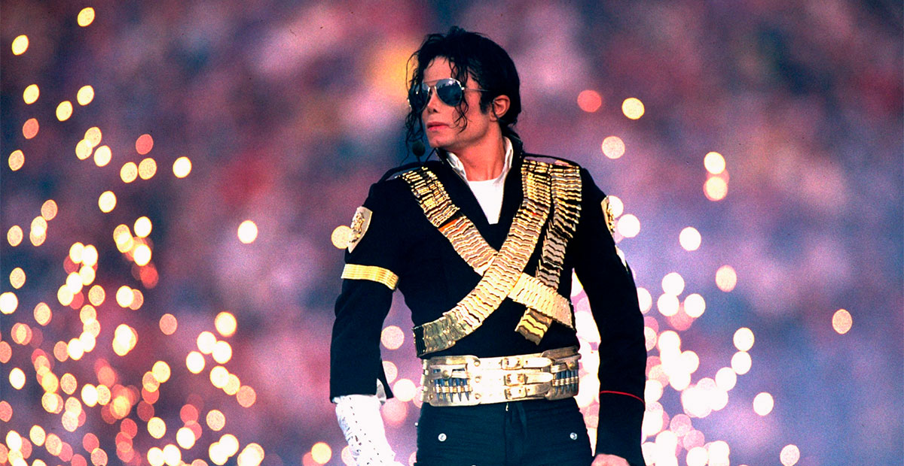
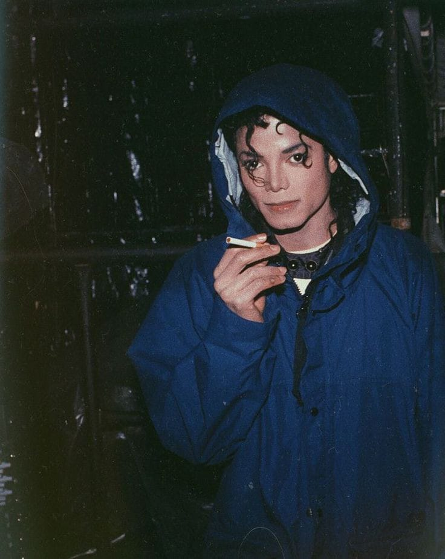
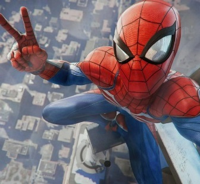

Michael Jackson fue un cantante, compositor y bailarín estadounidense, considerado una de las figuras más influyentes en la historia de la música. Nacido el 29 de agosto de 1958 en Gary, Indiana, comenzó su carrera artística siendo solo un niño con el grupo Jackson 5, donde rápidamente se destacó como la estrella principal. Con el tiempo, se lanzó como solista y su estilo único, junto con su talento para el espectáculo, lo convirtieron en el "Rey del Pop". Su habilidad para combinar música, moda y coreografía sigue siendo admirada hasta el día de hoy.
MICHAEL JACKSON

¿Quién fue Michael Jackson?

Con álbumes icónicos como Thriller, Bad, y Dangerous, Michael Jackson no solo rompió récords de ventas, sino que también revolucionó la industria musical. Thriller, lanzado en 1982, sigue siendo el álbum más vendido de la historia, con éxitos como "Billie Jean", "Beat It", y la canción homónima "Thriller", que transformó la forma de hacer videoclips musicales. Bad (1987) también fue un fenómeno global, con sencillos como "Man in the Mirror", "The Way You Make Me Feel", y "Smooth Criminal". A lo largo de su carrera, Michael Jackson logró 13 premios Grammy y 13 sencillos número uno en las listas de Billboard, algo que solo unos pocos artistas han alcanzado.
Además de su música, su estilo único de baile, con movimientos emblemáticos como el Moonwalk, le permitió conquistar los escenarios del mundo. El videoclip de "Black or White", lanzado en 1991, rompió barreras raciales en la música pop, y "Remember the Time" mostró su habilidad para fusionar culturas a través de sus producciones visuales. Michael también es recordado por su innovadora forma de hacer espectáculos en vivo, llenando estadios en cada continente y estableciendo un nuevo estándar para las giras de conciertos a nivel mundial.
El legado de Michael Jackson va más allá de la música. Fue un activista comprometido, dedicando gran parte de su vida y fortuna a causas humanitarias. A través de su fundación Heal the World y sus donaciones, apoyó a niños y comunidades desfavorecidas de todo el mundo. Canciones como "We Are the World", escrita en colaboración con Lionel Richie, y "Earth Song" muestran su profundo deseo de unir a la humanidad y promover la paz. Aún hoy, su influencia cultural y sus contribuciones filantrópicas continúan siendo celebradas en todo el mundo.

Marco Diaz